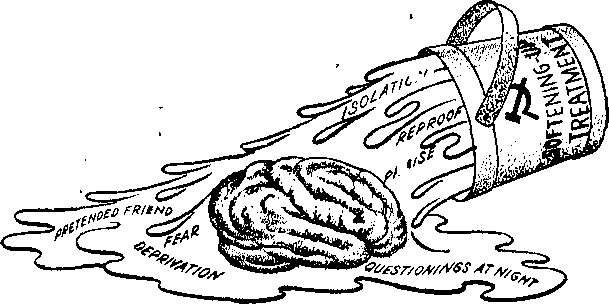

You and Your Child and Discipline
PAGE S
Communist Brainwashing—Fact or Fiction?
PAGE 9
Hair Styles That Make You Look Lovelier
PAGE 17
Illiteracy—a Challenge to Mankind
PAG E 2 1
JULY 22, 1961
THE MISSION OF THIS JOURNAL
News sources that are able to keep you awake to the vita!
times must be unfettered by censorship and setfish interests; "Awake!" has no fetters. It recognizes facts, faces facts, is free to publish facts. It is not bound by paiitical ambitions or obligations; it is unhampered by advertisers whose toes must not be trodden on; it is unprejudiced by traditional creeds. This journal keeps itself free that it may speak freely to you. But it does not abuse its freedom. It maintains integrity to truth.
"Awake!" uses the regular news channels, but is not dependent on them. Its own correspondents are on all continents, in scores of nations. From the four earners of the earth their uncensored, on-the-scenes reports come to you through these columns. This journal’s viewpoint Is not narrow, but is international. It Zs read in many nations, in many languages, by persons of all ages. Through its pages many fields of knowledge pass in review—government, commerce, religion, history, geography, science, social conditions, natural wonders—why, its coverage is as broad as the earth and os high as the heavens.
"Awake!” pledges itself to righteous principles, to exposing hidden foes and subtle dangers, to championing freedom for all, to comforting mourners and strengthening those disheartened by the failures of a delinquent world, reflecting sure hope for the establishment of a righteous New World.
Get acquainted with "Awake!” Keep awake by reading "Awake!"
Published Simultaneously in- the United States by ths WATCHTOWER BIBLE AND TRACT SOCIETY OF NEW YORK, INC. 117 Adams Street Brooklyn 1. New York. U.S.A-
and in England by watch TOWER BIBLE AND TRACT SOCIETY Watch Tower House, The Ridgeway London N.W. 7. England
N. II. Knokr, Prasidenf Grant Suiter,
Printing this issues 3,250,000 4d a copy (Australia, 5d; South Africa, 3/2c)
“Awakr!” b published In the following 23 language Semimonthly—Afrikaitrw, Cinyanja, DhiijkU, Dutch, English, Finnish, French, liernuin, Greek, Italian, Jujuiticw. Nitriscgiaii, Portuguese. Spanish, Swedish, Taming. Zulu. Monthly--CH>u-Vwsn, HoUno, Korean, MahynUtti. Polish, rkruinlai).
Yearly snljHCrlptloti rate*
Offlees for semi monthly edition*
America, U.S., 117 Adams St , Brooklyn 1, N.Y. $1 Australia. 11. Beresford Rd-, Jjtrathfleld, N.S.W, 3/. Canada, litII Rriil^eland Ave., Toronto 19, Ohl $1 England. Watch Tower House.
The Ridgeway, Loii'lon N.W. 7 7/-
Mew Zealand. 621 New North Rd.. Auckland, 8.W. J 7/-
Afrfca, Trixie Bitf, Elamjitfcmtein, TvJ. rOc Monthly etlHiniiu <mst half the abuve rates.
Remittances for subscriptions should tie sent Ln the office In your country. Otherwise send your remittance to Lonrinn. Notice of expiration In sent at least two issues boicire subucrijjtiiui expires.
CHANGES OF ADDRESS should reach us thirty days before your moving date. Give is your old and new address (If possible, your old address label). Watch lower, Watch Tower House, The Ridgeway London N.W. 7, End and.
S/rtateJ ay WACTidmatter at B/oukljn, N.J. Printed in England
The Bible translation used In ’’Awake/11 When other translations are used the
AS - American Standard Version AT An American Translation AV - Authorized Version (1611) Da - J. N. Darby's version
Is the New World Translathni of the Holy Strictures, following symbols will appear behind the citations:
Dj? — ■Catholic Douajr
ED — The Emphatic DiagluU
JP - Jewish Publication Soc.
L& — Isaac Letter's version
1U0 — James: Mciffiktt.’s. version /Co — J. B, Rotherham's vin^ion .EjS — Revised Stand; 1 rd Version Yg - Robert Youngs version
CONTENTS
Appreciate the Value of Commonplace
You and Your Child and Discipline
Communist Brainwashing—
Hair Styles That Make You Look Lovelier 17
Illiteracy—a Challenge to Mankind
“Your Word Is Truth”
Because something is commonplace do you take it for granted? Do you lack appreciation for it? Do you become indifferent to its value? Eto you ever stop to think how indispensable some very ordinary
the manna God provided for the nation of Israel. When it was first received, it was an uncommon thing, and it astonished them. But daily use of it for fortyyears made the manna an ordinary part of their lives. While its
things are? The water you drink, the food you eat and the air you breathe are essential for life; yet they are commonplace things for which few people express appreciation to the Creator who provided them. They take them for granted, often wasting and polluting them.
Man has the tendency to lose appreciation for what becomes ordinary in his eyes. Spectacular mountain scenery may thrill a person when he first sees it, but when he views it every day for many years it may become commonplace to him and no longer move him by its grandeur and beauty. The aesthetic value is still there, but he has, through familiarity, lost appreciation for the scenery. Unless a man continually cultivates appreciation for what becomes ordinary, it can lose its value to him.
Even miracles can cease to be impressive for some people when they become a regular thing. Consider, as an example, actual value to them as indispensable food in a desert wilderness did not change, their appreciation for it did. After a while they took it for granted, making no effort to cultivate appreciation. “The people kept speaking against God and Moses: ‘Why have you brought us up out of Egypt to die in the wilderness? For there is no bread and no water, and our soul has become disgusted with the contemptible bread.”’ (Num. 21:5) This divine provision of food was a miraculous thing, an expression of God’s love for them, but they came to regard it as an ordinary thing of little value.
Spiritual truths and divine laws were taught that nation time and time again, but these too became commonplace to them through repetition. Instead of keeping in their hearts the things they learned and maintaining appreciation for them, they became self-willed and disobedient. Their failure to give proper value to God’s instructions, laws and miraculous dealings with them contributed to their losing his favor,
Christians can consider this mistake of the Israelites as a warning. Instead of taking for granted their good relations with God, they should cultivate continually appreciation for them. Because their familiarity with basic Scriptural truths may make those truths seem ordinary, they must not lose sight of the value and importance of those truths. They must not permit themselves to be like the Israelites by becoming hardened to the doings and promises of God. Although his promises may become commonplace to some persons through frequent preaching of them, they do not lose their value.
The tendency to lose the proper evaluation of what has become commonplace can also be observed in connection with the work a man does, whether it is secular or connected with Christian activities. Possibly you have found that familiarity with a routine job over a period of years can make it become humdrum. Unless effort is made to keep up appreciation, enthusiasm for it can be lost. If you permit your interest to lag when your work becomes commonplace and you lose sight of its value to you, you may suddenly find yourself without work. It is better to appreciate the value of your job while you have it than after you lose it.
Although you may cultivate proper appreciation for your work, what about life itself? Do you appreciate the value of life in creatures that may seem commonplace because of their numbers? Man’s tendency is to have no respect for creature life that is plentiful. The American bison, for example, once roamed North America by the millions but was ruthlessly slaughtered almost to the point of extinction. Because there were a lot of them, hunters waste-fully destroyed them as if they were limitless. The same has been done to the once-immense herds of barren-ground caribou in northern Canada. Throughout history man has shown repeatedly a complete lack of good sense whenever he has come in contact with large numbers of wildlife. His impulse has been to destroy senselessly. Foolishly wasting wildlife or any other natural resource shows lack of appreciation for what God has generously provided. How do you regard such resources? Do you show appreciation for them by trying to conserve them? Do you express thanks to the Creator for them?
Life is an awesome thing that man can destroy easily but not replace. Whatever form it may have it reflects Jehovah's wisdom and matchless power. Although there is a profusion of living creatures, life should not be considered as so ordinary that it is unworthy of respect. Especially is this so of human life. While God gave man permission to kill lower creatures to supply his needs, he did not give him permission to destroy his fellow man. Despite this, human life is too frequently considered to be cheap, as shown by war and by murders committed when stealing even a little money. There are nearly 3 billion people on earth, making humans seem commonplace, but human life should be held in high regard. Appreciation of it as a marvelous creation by Jehovah must be maintained.
Do not misjudge the value of things that may seem ordinary or commonplace, especially when they have come from the hand of God. Do not take them for granted. Cultivate appreciation for all that He has done. “Voice your interest in all his wonderful works.”—Ps. 105:2.
YOUR CHILD
AND
idisgiruneI
How should discipline be administered? When is it effective?
OONER or later parents learn that discipline is necessary and inevitable in the bringing up of their children. It is not a simple matter, as some might think. It is not simply spanking Junior because he did not respond to your call or giving Mary a good shaking for spilling her milk. No, it is more complex than that. It requires painstaking effort and patience to discipline children properly in this confused and troubled world.
The word “discipline” has a variety of meanings. Webster’s New Collegiate Dictionary says the word means “to develop by instruction and exercise; to train in self-control or obedience to given standards.” Frank E. Baker, in the Progressive Education Magazines., defines discipline as “restraint, either external or self-imposed, on the conduct of an individual or group for the accomplishment of an end that is assumed to be good.” Discipline is said to include “the development of a sense of responsibility under guidance,” also “respect for authority and rights and feelings of others.” By it a child f-S - learns he cannot have everything. He learns to distinguish between right and wrong and to live in peace in his environment.
Good discipline has. as its aim a well-integrated, emotionally stable person who can and will discipline himself when others are not around to make or enforce decisions for him. Christian parents discipline their children according to righteous principles with life in view. The inspired Proverbs speak of such discipline as giving “insight” into the life-giving requirements of Jehovah. Therefore, the Bible counsels: “Take hold on discipline; do not let go. Safeguard it, for it itself is your life.” “For the commandment is a lamp, and a light the law is, and the reproofs of discipline are the way of life.” The Bible further says: “Anyone shunning discipline is rejecting his own soul [or life].”—Prov. 1:3; 4:13;6:23;15:32.
It is right and loving that parents discipline their children. “Do not hold back discipline from the mere boy,” is the inspired advice. “In case you beat him with the rod, he will not die. With the rod you yourself should beat him, that you may deliver his very soul from Sheol itself.” Not to discipline a child in line with the righteous principles of Jehovah is a form of cruelty and hatred, because it leaves the child with an unrealistic view of life and it hinders his opportunity of gaining everlasting life in God’s new world. So for good reason the Scriptures state: “The one holding back his rod is hating his son.” Foolishness being tied up with the heart of a child, “the rod of discipline is what will remove it far from him,” thus keeping him in God’s favor and in the way of life. —Prov. 23:13, 14; 13:24; 22:15,
Further, to avoid disciplining a child is to expose him to all kinds of tensions and resentment, J. Edgar Hoover, director of the Federal Bureau of Investigation in the United States, said: “Frankly, I become irritated when I hear doting mothers and fathers say, *1 love Junior so much that I just can’t bring myself to punish him.’ In reality, these parents do not love their children. It is a strange kind of love indeed which turns a normal infant into a maladjusted child! And let there be no mistake, an undisciplined child cannot help being maladjusted. Frustration, tension and resentment confront him on all sides.” To delay discipline is to handicap the child, because discipline must be learned, and the longer the delay the harder it will be for the child.
The undisciplined child is not only a headache to his parents, schoolteacher and others, but he is unhappy with himself. The findings of Dr. Dale B. Harris, director of the University of Minnesota’s Institute of Child Welfare, show that “children reared by extremely permissive methods are, as adults, pretty much at sea. , , . We get an impressive picture of people who are drifting, not achieving up to early promise, not markedly satisfied, yet neither contented with present achievement nor able to say wherein they find pride and satisfaction of attainment.”
In marked contrast, those who come from families who applied discipline, according to Dr. Harris’ findings, demonstrate more drive, purpose and intellectual efficiency, are more interested in achievement, have “more interest in the responsiveness to the needs, motives, feelings and experiences of others, and more concern with how others react to them.” The disciplined child is said to look back more favorably on his childhood relations with his parents.
What is more, a child wants to be disciplined. Judge Philip B. Gilliam of the Juvenile Court of Denver said that children “require and unknowingly crave” sturdy discipline. J. Edgar Hoover stated: “Children want—desperately—to be disciplined. Superficially, they may rebel. But on a deeper level, where character is formed, a child wants to be told what he can and cannot do.” So “do not hold back discipline from the mere boy.” It is your duty to discipline him. A child soon loses love and respect for parents who compromise and yield to him or are lazy and indifferent about facing up to their obligations. “Chastise your son and he will bring you rest and give much pleasure to your soul.”—Prov. 29:17.
There is no magic formula for getting children to behave. Disciplining children is not like baking a pie. There are no surefire recipes, no lists of do’s and don’t’s that are guaranteed to produce good results.
Each child is different. There are aggressive children and timid children. There is the overactive child and the “show-off,’* the “model** child, the unpopular child, the sensitive child and the child who will not try. Since children do not develop either emotionally or physically at the same rate, they must each be dealt with individually. However, they do learn faster when they are relaxed and happy.
To be good disciplinarians the parents must consider each child individually. What may be good discipline for one may be bad for another. One mother says: “I spank one child black and blue and he never bats an eye. But if I merely raise my voice to the other, he practically dissolves in tears.” Parents of two said: “The girl could always be talked to but not the boy, nothing fazed him but a good spanking.” Parents of four remarked similarly: “We have always had to work on each of the four in a different way.” The child’s disposition, his age, size and build must all be considered.
Good discipline is referred to as "creative discipline,” that is, discipline that instructs and builds up the child. It delves into the reasons for bad behavior. For example, if your car were to act up, you would not begin to solve the problem by beating it to shreds, would you? Of course not. Most likely you would say, “I wonder what’s wrong with it?” You first endeavor to determine the cause of the trouble and then you set out to remedy it. Parents need to be at least that considerate with their children. They need to ask, “What's making my child act so contrary? Why doesn’t he want to eat, sleep or play?” Children usually act the way they feel. If they feel bad, they act bad. If a child is unruly, it is often his way of saying, “I don’t feel well.” “I’m hungry.” “I’m afraid.” “I’m sleepy.” It is not always that a child wants to be unruly. Find out what is causing the difficulty; it will help you to know how to deal with it.
Discipline with Love and Understanding
Warm parental love is the foremost quality needed to promote good behavior in a child. Dr. Benjamin Spock said: “What is really important in the development of good discipline is the feeling of the parent toward the child and of the child toward the parent. . . . The methods of punishment—if any—are only incidental details. We know that the most vital element of all is that the parents love the child in the sense of being devoted to him, wanting him to turn out well, enjoying his good qualities (not his bad ones). The warmth of their love is what fosters in him lovingness and lovableness.” Qften children turn bad for want of parental love. A child who knows he is loved will be lovable. Children are entitled to love from birth, with no strings attached.
Parental understanding is vital too. A lack of understanding can make a child emotionally ill. For example, a husband will say, “My wife doesn’t understand me. She gives me a pain.” If an adult suffers emotional pains from a lack of understanding, how much more so will a child? If you condemn or ridicule a child for the way he feels, the next time he will refuse to share his feelings with you. As a result you will not be able to help him. Good discipline takes into account the feelings of others.
A lack of understanding will cause a child to be unco-operative and resentful. Suppose you tried hard to please your husband by baking his favorite pie, but by accident it burned. When your husband came home and opened the door, if he, without a word of sympathy, said, “Oh no, not again! That’s terrible!” how would you feel? You might say to yourself, “I’ll not bake another pie for him as long as I live.” You feel unco-operative and resentful, because he did not take your feelings into account. Had he put his arms around you and said, “Honey, you must feel terrible,” like magic you feel better, because he considered your feelings. You are determined to do better. Children are no different Share their feelings and you will accomplish far more than by belittling them. Children who are loved and understood “do a tremendous amount of work themselves developing their own characters and discipline,” Dr. Spock said. And by the use of these qualities your job as disciplinarian becomes so much easier.
Patience is a needed virtue when disciplining children. Learning to live with others takes patience. Since children are learning to live with others in an adult world, it takes an extra portion of patience to put up with them. The mother of a ten-year-old child said: “It takes patience, and patience, and more patience.” It is unreasonable to expect a child to do at once everything you want. The child is learning, and learning takes time. So try to be calm and patient.
Add to your patience firmness. The child feels lost with a submissive, wishy-washy parent. He likes to be handled by someone who is emotionally stable and confident of himself. One mother said that even the tone of voice has to be firm when disciplining, but, she quickly added, “It can have love in it.” Another mother stated: “I say something and Tommy sits. His father says the same thing, word for word, and Tommy jumps.” The tone is different. A child craves firmness. It gives him a sense of security and belonging. It shows that the parents are interested in him.
Therefore, parents should not be afraid to be firm, knowing that “foolishness is tied up with the heart of a boy; the rod of discipline is what will remove it far from him.” A child needs constant guidance and restraint. If the child misbehaves, the parent should promptly show, disapproval. If the child tries again, the parent should restrain him again until the child has made up his mind to behave.
There are times when a really firm hand is needed. Parents must not shrink from this responsibility. J. Edgar Hoover said: “Pampering, overprotection, making excuses and cooing soft words when a firm hand across the seat of the trousers would be more appropriate are practices which create contempt for authority and obstruct decency among youth.” Heed the Scriptural advice: “Chastise your son while there exists hope.” “The one whom Jehovah loves he reproves, even as a father does a son in whom he finds pleasure.”—Prov. 19:18; 3:12.
Being a good parent is not easy, but there is this rewarding note from the Scriptures: If you train your child the proper way, “even when he grows old he will not turn aside from it.”—Prov. 22:6.
“Not too long ago,” says Robert J. Serling in his book on air travel, "a passenger checking in on a flight was told his baggage was overweight. ‘Naturally,’ he ' laughed. 'I’ve got a bomb inside.’ In less than ten minutes, he was heing questioned
by FBI agents. In less than thirty minutes, he was being booked on charges of violating Public Law 709, an act passed in 1956 whieh subjects any person falsely reporting a bomb on an aircraft to a maximum thousand-dollar fine, a year in prison or both. And legislation has been introduced in Congress that would increase the penalty to five thousand dollars, five years in prison or both.”
BY "AWAKE?" CORRESPONDENT //V BERLIN } GERMANY
IS COMMUNIST brainwashing a hard fact or a harmless product of the phantasy of frightened minds? What is behind the mysterious brainwashing that the Red lords are said to be using on their political prisoners?
The term “brainwashing" is comparatively new. As a matter of fact, it first became known during World War II. According to Webster’s New International Dictionary the term is a translation of the Chinese words Hsi Nao and refers to a method that was originally used by the Chinese Communists to supplant the political views of persons with the Communist one, against the will of the individual but without use of physical force.
Particular amazement was aroused in Western nations by astonishing testimonies of Communists who had been accused of treason and who publicly carried on before Communist courts the most drastic sort of self-incrimination. The Hungarian Communist Rajk, executed for high treason, had confessed in 1949 to being an agent of five secret services, including the Gestapo.
But not only Communists have been subdued by the apparent spell of brainwashing. American pilots made hair-raising confessions before Communist courts about bacteriological warfare against Red China. Investigation of the conduct of American soldiers who fell into Communist captivity during the Korean war was surprising.
About one third of those
taken prisoner had in some way or other mentally switched over to the side of the Chinese Communists. Following their return, forty-seven of them were brought to court for outright collaboration with the
Reds; and twenty-one refused even to leave the Communist world in order to return to their homes in America.
A similar case took place last year at the Moscow show trial of the American U-2 pilot. The accused answered the 164 questions of the Russian prosecutor, including his sweeping confession of guilt and the emphatic acknowledgment of good treatment following his arrest, by rote, as if one were asking him his A B C’s.
For these occurrences various explanations were found. Among other things, reference was made to the general lack of the spirit of unity among the American soldiers. In difficult situations many left their fellow captives in the lurch for the sake of unreasonably meager advantages.
The American school system was criticized for not giving a sufficient foundation in community c o n-
sciousness as a nation.
/r
The neutral observer, however, will find similar characteristics to some extent in other nations of the world. There is really something behind the Communist brainwashing.
Brainwashing is a contrived method of systematic destruction of the personality of an individual. It might more aptly be called brain-corrupting.
The Role of a “Well-meaning Friend”
Scientists in various countries analyzed the methods used by the Communists on the victims of their mind-corrupting brainwashing. An important principle of brainwashing is the withdrawal of a person from his surroundings by means of isolation from all sensual impressions. The person thus comes more and more into a condition in which he cannot think soundly. Then through alternate reproof and praise he is forced into the desired direction of finally agreeing to and admitting everything that is demanded of him so as to satisfy the interrogators, who, according to his impression, mean well with him.
The life history of the individual is favored as the main subject for discussion; and following a period of monotonous confinement, he gladly submits to being drawn into this seemingly harmless field. Thereby he has been lured into the trap. The questioner is interested in the slightest details. Every nook and cranny, however meaningless it may be, is scrutinized. It is only natural that apparent discrepancies arise in the course of the conversations. These are branded as willful lies, and the conversational atmosphere is impaired. The victim strives with increased vigor to clarify and make good the matter, so as to regain his pleasant relationship to the questioner. The offenses with which the prisoner is charged are woven together with fitting details of his altered life history, and in this artificial way their “understandable” cause and explanation are arrived at.
The preliminary treatment, to get the prisoner into a compliant mental condition, is extensive isolation. According to his strength to resist, each one is placed in solitary confinement for several days or weeks, without natural light, without any possibility of busying or amusing himself with books or objects, without orientation as respects time, with little food and with temporary deprivation of food. The prisoner, moreover, has to sit in a certain posture and sleep in a certain position with his face toward the light, which is never turned out. When he seems to have been “softened up” enough, the interrogations start. These are carried on preferably during the night.
Scientific institutions have made experiments with volunteers to study the strange reactions of the brain under circumstances approximating the condition of extensive separation from outside impressions. At the McGill University in Montreal, Canada, for instance, they had experimental persons lie on a soft bed in a soundproof room. All of these persons were students, who could earn twenty dollars for every twenty-four hours of lying and doing nothing. Their eyes and ears were covei’ed with a heavy mask and their hands individually wrapped so as to eliminate appreciably the sense of touch.
The result of all experiments of this kind consistently showed that man apparently cannot last long without getting any new sense impressions. After a quarter of an hour some persons were already completely bewildered. Many gave up after one day, although they at first felt that they had never earned money so easily. During the isolation, queer sensations mixed with vivid personal recollections overcame the experimental persons. The longer the experiment continued, the more their feelings of restlessness and fear multiplied. After interrupting the experiment, the sense delusions disappeared, but headaches and dulling of the thinking faculties, as well as other disorders, continued to bother them for a time. When they came out of isolation, they felt as if their minds were soaking up everything like dried-out sponges. All sense impressions affected them much more intensely. Seeing, hearing, tasting, smelling and touching were like new experiences. This hunger of the senses to take in gratifyingly any kind of offered sensation is the desired condition for brainwashing.
A former inmate of an East German prison reported his own experience with brainwashing: “Toward the end of the year 1954, I was turned over to the State Security Service. On the very next day I was brought before a judge who implied that my statements were half lies and that he was now giving me the opportunity to explain everything that had occurred. His recorder sat ready at her typewriter to take down my confession. I indicated to him, however, that I had nothing further to say. He emphasized the necessity of speaking the truth. He said that it would be better for me to do so, for later I would tell everything anyway. But since I stuck to my refusal, he shoved a piece of paper in front of me for me to sign, on which was written that I refused to testify. That I signed.
“Thereupon I was put back to the basement floor and, after weeks had passed, into the most musty cell. The light burned night and day. There was no daylight at all, only during the daily rounds for perhaps a half hour. Perhaps seven weeks passed during which I was not molested with hearings, but in the course of weeks in this last and worst cell, strange thoughts accumulated so that an abnormal condition resulted.
“Then it started again: One hearing after another. First it was for hours, then days, then day and night sitting up there and waiting until things progressed to the point where one started talking. But all of the things that were drawn out of me had nothing more to do with truth. I even affixed my signature to lies. I had lost my balance. A person was not beaten, but, as one would sdy, ‘softened up,’ and these statements were squeezed out because one could assemble no logical thoughts any more. There may be some who have a constitution that can defy such relations and conditions. I am one of those who could not win despite the firm resolve to do so.”
The facts are clear: Materialistically-minded persons will have difficulty withstanding this method of confusing the mental processes, which has been developed according to materialistic principles. For them the mind of man is merely a “higher nerve activity,” not a special gift that the Creator has given man, a gift that elevates him above the lower animal world and which the Creator can also activate and strengthen and protect against the onslaught of ungodly materialists.
With people of true faith and trust in God, however, protection against such vile attacks on the human mind is possible. The English psychiatrist William Sargant points out in his book Battle for the Mind, a Physiology of Conversion and Brainwashing: “Those reported as among the best able to preserve their standards and beliefs in the German concentration camps during World War two were members of the sect of Jehovah’s witnesses. This pacifist religious group has many strange beliefs, but these were implanted with such strength and certainty by their religious leaders as to remain operative when continued debilitation had reduced most other people of the highest ideals, but no specific loyalties, to accept the very lowest conception of individual and group morality.”
Bringing the matter more up to date concerning Jehovah’s witnesses, another writer, Mathison, states in his recent book Faiths, Cults and Sects of America: “All this persecution has worn well, . . , And, perhaps, the sternly conventional have a lesson to learn from the unyielding 'courage of this persecuted minority. During the Korean War, the products of easy Protestantism, of our military schools and our better colleges cracked by the score under the stress and blandishments of Communist brainwashings. A Pentagon study of the problem brought forth a redfaced conclusion: Those few Jehovah’s Witnesses who ended up as prisoners of war, even though they scorned the flag, the United States government and the military, withstood to a man, the scientific, psychological efforts to convert them to Communism—better than a number of patriotic West Pointers.”
“Withstood to a man”—how is it possible for Jehovah’s witnesses so to resist Communist brainwashing? It is because of their strong faith, hope and love. Having these qualities, they place their trust in Jehovah God and thus they mentally keep their Helper at their right hand, as did the psalmist: “I have placed Jehovah in front of me constantly. Because he is at my right hand I shall not be made to totter.”—Ps. 16:8.
FOR YOUR READING ENJOYMENT
• What About Life After Death?
• Why Drown?
* So Vou Want to Become a Nurae?
• Indian Key to Succeeaful Marriage.
* Why I* Chocolate So Deliciously Moreiah?
* How Long Did Methuselah Live?
All in the next isaue?.
Then there is prayer. Jehovah’s witnesses know that their prayer to God can penetrate every kind of isolation, and they maintain this strengthening contact, communing regularly with their Creator.
They also meditate on God’s Word. Even though they might be completely cut off, they constantly ponder the precious truths of God’s Word in their minds; and no one can separate them from these heart-deep truths. It is as the psalmist said: “In my heart I have treasured up your saying, in order that I may not sin against you.”—Ps. 119:11.
Further, they do not allow themselves to be misled by the delusion that the enemies of God are their friends. Rather, they keep David’s words in mind: “I will set a muzzle as a guard to my own mouth as long as anyone wicked is in front of me.” (Ps. 39:1) They prefer to take threats and reprisals upon themselves and remain silent rather than begin talking to enjoy temporary relief.
So protection from Communist brainwashing is possible, but it comes from “acquiring power in the Lord” and from putting on “the complete suit of armor from God that you may be able to stand firm against the machinations of the Devil,” including any brain-corrupting tactics of ungodly men.—Eph. 6:10, 11.
the Fish of Two worlds
water world stead turns which

ih North-America. Avhen salmon are moved by instinct tff spafvn,' they leave their salt
as
flsh but grows up in the v of salt-water flsh. But in- ‘ of staying in the sea it re-to the fresh-water world in it was born. These move-
By "Awakal" correspondent ■ in Alaska
water world for the fresh-water one they knew as small fish. By the millions they swim up rivers and streams throughout the Northern Hemisphere, leaping over obstructions that may be
much as twelve feet high. These mass
BORN in a world where it does not grow up and grow-L ing up in a world where is does not stay, the salmon is, in a sense, a fish of two worlds. It is born in the world of fresh- i ments of the salmon are of intense ‘ interest to man because this unusual fish is not only a valuable source of food but is the basis for the economic prosperity of a large number of people in various parts of the earth. Possibly cans of salmon on a grocer’s shelf are a common sight to you, but what do you know about the fish itself?
Every year in north European, North American and Siberian waters millions upon millions of these tasty fish are caught by commercial fishermen, canned and shipped off to feed hungry mouths the world around. Far out in the ocean where there appears to be an intermingling of American and Asiatic salmon, the Japanese have been operating successful salmonfishing fleets. These are accompanied by factory ships that can the fish on the spot. In 1959 the Japanese canned over two million cases of salmon, which compares well with the more than three million cases canned that year by the salmon industry migrations are called salmon runs. Because the skin of the fish tends to turn dark after lengthy contact with fresh water, fishermen try to catch them while they are still in the sea or just after they have entered the rivers and streams.
Boats with trolling gear try to catch the fish while they are in the ocean and still feeding. As a boat cruises about, its crew has several fishing lines trailing in the water, with a number of hooks on each line. As the salmon bite they are reeled in by engine power. When the fishing is good these fishermen work themselves to the point of exhaustion and worry about how soon the big run will play out.
Another group of fishermen catch salmon with the purse seine. This is a very long net with one end fastened to the boat and the other end held by a small boat that moves around a school of salmon. The free end is brought back to the main boat, A long rope that runs free in rings at the bottom of the net is gradually tightened so that the fish are concentrated in a purse or pocket. From this pocket the fish are brailed or dipped out into the boat. The purse seine is the basic mobile gear used in catching salmon for the canning industry.
Gill nets are a favorite among many salmon fishermen that work the rivers. Their nets are designed so that the mesh or openings in the net are large enough to allow the head of the salmon to pass through but not the body. When a salmon tries to back out, its gills become snagged in the net. Because the gill-net fishermen catch the salmon before fresh water has had time to discolor them, they are still of fine quality and good for canning.
Floating fish traps have been very effective for catching salmon, but they are not generally liked by Alaskan fishermen. The trap is floated in the river with a lead of chicken wire stretching from the trap to the shore. The wire hangs from cedar floats and reaches down to a depth of about sixty feet. Salmon that come to the fence swim along it and are led into the trap. Here several fenced-in chambers lead the fish into the pot or main part of the trap. Once in the pot they cannot get out Periodically a boat pulls up to the trap and brails out the fish. Traps are so efficient that the popular contention in Alaska is that they cut deeply into the production of the net fishermen. It is also argued that they do not allow enough fish to get through to spawn. Shortly after Alaska gained statehood, fish traps were banned from its waters.
There are six principal varieties of salmon that are often named differently according to the various localities where they are fished. The most highly favored is the king or Chinook salmon. Its weight averages about twenty-five pounds, with some immense ones tipping the scales at over a hundred pounds. One of these large ones caught at Petersburg, Alaska, weighed approximately 126 pounds. The king salmon is a handsome fish when taken directly from the ocean and has tasty flesh that is rated very high in food quality.
In the Bristol Bay and Bering Sea area the chief salmon variety is the sockeye or red salmon. It is next to the smallest salmon, averaging about five to seven pounds in weight, and is the second-largest contributor to the Pacific salmon pack.
The pink or humpback salmon was at one time unpopular because of its pale color, but now it has become the main fish in the salmon-canning industry. It weighs about five pounds and has a flesh of fine flavor. This salmon generally seeks out the smaller streams at spawning time.
Like the pink salmon, the chum or dog salmon has pale flesh, but it ranks with the other varieties in nutritive value. In Alaska it is the mainstay of the fall run of fish. The fifth variety is the silver or cohoo salmon. It is a beautiful fish with a bright silvery skin and is sought principally for the fresh- or frozen-fish market. The Atlantic salmon is the sixth principal variety. It is native to rivers on both sides of the North Atlantic. The weight of this fish varies from fifteen to forty pounds.
One of the concerns of the salmonfishing industry is the damage done to salmon runs by predators. Seals and sea lions, for example, destroy a great number of salmon at the mouths of streams and are a particular nuisance to net fishermen, as they damage or destroy netted fish. Some success has been had in reducing their depredations by shooting and dynamiting them. But killing harbor seals to protect salmon for fishermen creates another problem. Food found in their stomachs reveals that they feed upon other fish that prey upon young salmon. Thus the killing of seals increases the problem of predator fish. In view of this, perhaps salmon fishermen would do better by being more tolerant of seals and sea lions. It has often been found unwise for man to interfere with the balance in nature.
Beluga whales, birds and other fish all take a toll on the salmon run. The stomach of one beluga contained 1,500 downstream migrant salmon. There are certain birds that also feed on small salmon as well as salmon eggs, but the amount of damage they do is unknown. Despite the many enemies the salmon encounters in its two worlds, millions manage to survive to become adult fish.
When the female salmon finally reaches her spawning grounds at the headwaters of a stream or river, she proceeds to fulfill the purpose of her trip from the salt-water world. She may have traveled as much as 2,000 miles to carry out this climactic act of her life.
The nest or redd is dug by the female. She does this by lying on her side and beating the gravel stream bottom with her tail. This and the strong current cause gravel to move away from the spot she has chosen. She continues beating the stream bottom until a depression is made from six to perhaps eighteen inches deep, and then she lays her eggs. As soon as the eggs are laid the male salmon squirts sperm on them. It travels through the water and fertilizes the eggs in three to seven seconds. After filling the depression with gravel the female proceeds to another spot, which may be immediately upstream, and digs a nest there. Eggs may be deposited-in several of such nests before they are all laid. The female king salmon lays, on the average, from 300 to 400 eggs to each pound of its weight. The Atlantic salmon greatly exceeds this. After the eggs are laid the Pacific salmon die.
The amount of time required for the eggs to hatch depends upon the temperature, flow of fresh water through the nest and variations according to locality. Usually they hatch in two or three months, at which time they are called'yolk sac fry. The heart of the baby fish is at this time in the yolk sac. As the food in the yolk sac is used and the sac dries up, the heart moves into the body, and the abdominal section closes. In the meantime the yolk sac fry has worked its way out of the nest through openings between the rocks. The disappearance of the yolk sac makes the fish an unfed fry. Now it begins to eat for the first time.
The unfed fry feeds upon plankton and quickly grows to what is called a fingerling. It remains in the stream for at least one year, eating and growing. By the time it is ready to migrate downstream it has become a smolt. The chum and pink salmon do not stay long in fresh water but head for the sea shortly after leaving the nest.
After salmon have left this fresh-water world for the salt-water world, man loses track of them. He is uncertain as to where in the ocean they actually grow up, but he does know that they spend several years there. Another salmon mystery that man has not been able to solve is how these fish are able, after spending years in the sea, to find their way back to the very place where they were hatched. Those fish that are released from man-made hatcheries are known to return to the hatchery pond and to mill around the fishway from which they came out. If eggs are taken to another stream, the salmon hatching from them will return there. There is some evidence that the fish guide themselves by the stars, but that does not explain how they remember the way back. The Creator has marvelously equipped them for their role in life.
Modern fish hatcheries are especially useful in restocking streams where the salmon run has become depleted. Salmon eggs that have been developed in a hatchery to the point where the eyes of the fish can be distinguished are planted in the gravel of a stream bed. Perhaps as many as 10,000 eggs are placed in one hole and then covered over with gravel. Several of such plantings may be made. The salmon that spawn from these eggs will return to the same stream two or more years later, depending upon their variety.
In recent years the salmon-fishing industry has become increasingly concerned with conservation problems. Any prolonged decline in salmon runs drastically affects the prosperity of this big industry and the economy of the many fishing communities that make their livelihood from salmon fishing. Fishing limits are an important factor in preserving this natural resource. Observance of them by salmon fishermen is for their own good. This is now recognized by the Japanese, who are greatly dependent upon the sea for food. Kenji Sakai, in the magazine Pacific Fisherman, said: "Increasing awareness of the Japanese people as to the necessity for conservation of the living resources of the high seas may prove to be the most significant aspect of 1959 for Japan’s fisheries and their future in international waters.”
Industrial development along waterways used by salmon is increasing the problem of fish conservation. Dams that are erected for electrical power, irrigation and flood control are obstructions that can prevent salmon from reaching their spawning grounds unless fish ladders are constructed. These are a series of flooded steps that fish can easily jump. But dams can still be bad for salmon, especially the young ones that are migrating downstream to the sea. They may be destroyed by hydroelectric turbines in dams or diverted into irrigation ditches. Water pollution by industry and cities is another cause of fish destruction.
The disappearance of Atlantic salmon from the streams and rivers in the northeastern United States has been attributed to water pollution, dams and overfishing. In the eighteenth century the great abundance of Atlantic salmon in New England was one of the chief attractions for colonists, but by the nineteenth century there' was scarcely a salmon to be seen. Conservationists do not want to see the same thing happen to Pacific salmon.
Salmon are definitely a valuable fish to man and worth every effort man can make to preserve them. Because they are in abundance, yielding hundreds of millions of pounds of nourishing food every year, that does not mean the supply is limitless. Indiscriminate destruction of them and their spawning grounds can lead to but one result: the end of a valuable food source and a profitable industry. Wise use and care of salmon can help to insure a regular and bountiful supply for man’s future generations.
FTTHERE are between 90,000 and 160,000 hairs on the average human head. In order for the head to look its best, these thousands of hairs
must be neatly arranged in a style becoming to you, and this is usually a chore. A young wife said: “My hair is my biggest problem. It must look nice for me to feel right. I can have an ordinary dress on, but if my hair looks good, I feel good. If my hair is a mess, it doesn’t matter what I wear, I feel miserable,” A becoming hair style definitely can contribute to the happiness of a woman.
said that a He wrote: you that if dishonor to
Healthy hair is not only shiny and lustrous, but also beautiful to behold. A lovely coiffure speaks of a woman’s appreciation of beauty. The apostle Paul woman’s hair is her glory. “Does not nature itself teach a man has long hair, it is a him; but if a woman has long hair, it is a glory to her? Because her hair is given her instead of a headdress.” No doubt that is why ancient Hebrew women gave great care to their hair. They would bind it up or braid it. On special occasions they treated their hair with fragrant ointments and oils and even sprinkled gold dust on their coiffures to make them more brilliantly beautiful.—1 Cor. 11:14, 15.
A woman’s hair is still her glory and the Bible rule still applies, but styles have changed somewhat. Today a number of factors may influence a style. For example, climate may be a serious factor, as in the case of the Seminole Indian women. In this century they have devised a hair style that is an ideal do-it-yourself sunshade. The style is an imitation of the pompadour that was popular in the United States in the nineties. The women bring the entire head of long, thick, black hair forward over the face, then form it into a roll, visor-fashion for protection from the hot
Florida sun. personalities and those of of the Occi-
National preferences and may also dictate hair styles, the Orient differ from those dent. Fashion-conscious senoritos of Latin America are peering through cortinas (curtains). This coiffure appears to be a national preference. The hair in this style cascades from a high pompadour effect down over the forehead and is parted just above the eyes, allowing just a fraction of an inch for fluttering eyelashes. On the other hand, her American sister to the north is wearing the “Jackie Kennedy look.” The United States president’s wife’s bouffant hairdo is becoming the fad in beauty salons across the nation. College girls are copying the first lady’s style casually, while suburban matrons do so faithfully.
'Today’s Western woman enjoys wide freedoms when it comes to a choice of hair styles. These styles seem to originate about as much outside beauty salons as inside. But they are most often copies of styles first worn by prominent people in the business and entertainment world. The extent of the freedom taken in this regard is, perhaps, reflected in the recent remarks by actress Shirley MacLaine, who said: “Long hair’s a pain—I mean, it’s a bother. That’s why I ended up with mine like this. I chopped it off when I was in the stage production of Can-Can, because the producer of that show hinted strongly that I ought to do something about it quickly. I was wearing it in a ponytail, and every time I did a quick turn, my hair took half an hour to follow me around. So one night between the first and second acts I let it have it. I was chipping my teeth on bobby pins anyhow, and it's so much easier this way. I forget that it’s there until things begin to turn dark, then I realize that my bangs have grown so long I’m having trouble seeing through them, and I hack away at them again. I really do comb my hair in the morning when I get up, but I must admit that I don’t comh it any more, except with my fingers, even after I've driven in an open car.’’ This sort of flippant, devilmay-care attitude toward one’s hair style would never have been tolerated twenty years ago, but today among some people it is more or less the accepted thing.
There was a time when men had a lot to say about a woman’s hairdo. A large majority of them appeared to cast their vote for long-hair styles. In fact, once a woman’s respectability was measured by the length of her hair. The longer her hair, the more respectable she was considered, and vice versa.
Many men still admire long hair on women, but some have come to appreciate the shorter styles too. A woman should consider her husband’s preference. If he likes her hair long, then, by all means, she should wear it long. If he enjoys it shorter—of course, retaining a proper feminine appearance—then wear it short. A husband who appreciated his wife’s hair short said: “If she has short hair, it’s neater . and she has more time for me.” Another husband offers this comment: “I’m not much at noticing new hairdos. What I like, frankly, is when they don’t look new—just pretty.” Another observes: “I just can’t stand those frozen touch-me-not hairdos. I like hair that looks nice and soft, and smells good, too.” If your husband likes your hair long with every hair in place, then see to it that it is that way. It may take more time and work to get it that way, but consider his approval well worth the extra effort. ■
However, hair styles are not everything. A trip to the beauty shop will not take the place of your being an interesting companion. When counseling Christian wives, the apostle Peter said: “Do not let your adornment be that of the external braiding of the hair and of the putting on of gold ornaments or the wearing of outer garments, but let it be the secret person of the heart in the incorruptible apparel of the quiet and mild spirit, which is of great value in the eyes of God.” Therefore, being physically attractive is only part of a woman’s responsibility. Growing in spiritual beauty is far more important in the eyes of God and man. A kind word and a loving smile are far more lastingly beautiful than a golden curl.—1 Pet. 3:3, 4.
Time is a factor. Hairs just do not fall in place by themselves, and Western women especially seem to be rushed for time. If men want to see their wives in long glamorous-looking hair, then wives say that men should be willing to allow time for its proper care. Many men seem oblivious to the time needed and consumed in caring for long hair. One wife says: “Little by little, as I stayed up late at night in order to brush and curl my hair, it began to dawn on my husband that to keep long hair beautiful takes a lot of time and work, more than he realized. When I washed it, he found that it took up to two days for it to dry. And during that time my head was in curlers—not exactly a pretty sight. To dry my hair in a hurry meant a trip to the beauty parlor. This took not dnly time but extra dollars. I tried drying my hair in front of a furnace blower and going to bed with a wool scarf wrapped around my head, in an effort to cut down on the drying time. The time saved, however, was negligible. These and other reasons led to a slight liberalizing of his views toward shorter’ hair styles.”
Let’s face it, long hair is not attractive unless you take care of it. It can be downright messy and as shaggy looking as a mop if not cared for properly. And another thing, to wear long hair you have to have the features or the shape of head to go with it. And for a fact, some women just do not have the features that go with longer hair. They have features and heads that are by far more adjustable to shorter styles. By “shorter,” we mean hair cut between ear and chin length, which is not really short at all; it just sounds short.
Short-hair styles had their beginning in the early twenties, when the bob became a rage and women all over England and America flocked to the hairdressers for a shearing. Women simply had their hair chopped off without any style or thought as to whether they could wear short hair. They wanted their hair short, and that was that. Therefore some of these first bob haircuts were, frankly, terrible to look at. They were crude, devoid of all femininity, and quite naturally men found them hard to take. Some men have never forgotten those first impressions, even though hair styles have come a long way since then.
Today hairdressers attempt to suit the coiffure to the individual face and figure. Short hairdos give a woman an opportunity for a variety of styles and long hair provides for even more variety. One arrangement can lengthen the neck, another can present a picturesque background for the face, another can make the head look free and easy. Long hair looks lovely and feminine in a French twist. However, if the coiffure covers the forehead or has a low line in back, it will shorten the face. The mouth, too, can be made to appear smaller or larger by the style hairdo you wear. The face can be lengthened by covering the temples and parts of the cheekbones with hair. Usually women do not favor this style. If you want to broaden your face, part your hair in the middle. If the head lacks symmetry, a center part will make this fact more noticeable. This drawback can be regulated by putting a greater concentration of hair on the unproportioned side. A part on the side will shorten a long face and will re-establish the symmetry of a facial oval. Every hair style should, therefore, take these points into consideration. If your hair stylist does, he will make you look lovelier and you will be the happier for it
A child can wear almost any hairdo and look lovely in it as long as her hair does not have that “frozen,” beauty-shop look. Teen-agers, too, can wear their hair long or short, with bangs or without, ponytail or no ponytail, as long as their hair flows free. The style must have that “just happens to be beautiful” appearance about it or else it will detract from the beauty that is youth’s.
After a woman turns thirty, a chinlength hairdo has a tendency to bring out her charm. She does not look as if she is vainly trying to recapture the days of her youth. Youthful fashions, such as the “ponytail” style, for that reason are usually unbecoming to older women. Long hair is very adult-looking, but you have to have the face and features to go with it.
Some women state that they cut their hair short because it is more economical that way, but not so. Short hair, to look good, must be cut every two or three weeks, and haircuts are expensive. Long hair is actually more economical, but it takes more homework to keep it looking beautiful. A wife confessed: “A hundred brush strokes are all right for those who are young and single. They’ve got the time and energy. But for us married folks, well, our time is no longer our own. Shorter hairdos are more practical, even though more expensive in the long run.”
Long hair has its decided advantages. Permanents can be made to last longer, because with a head of hair that grows fast, a woman has to get a permanent every four months, if she wears it short. But if she keeps it long, and does not cut the old permanent off every month or so, it can stretch out over most of a year.
“Paying $15 or $20 for a permanent? Outrageous!” says the husband. But not really. When he begins to add up the accumulated cost of his haircuts over the same period, he spends as much or more. Every other week he pays between $1.25 and $2.00 for a haircut. In four or five months his haircuts have run between $12 and $20, not counting tips. And man gets nowhere near the thrill out of a haircut that a woman does out of a permanent.
Some women just do not have a knack with their hair, and they know it. Often this fact forces them to the beauty parlor every week, which, of course, adds up at $2 to $3 a visit. It is for that reason that the simpler, less involved coiffures are becoming more and more popular. Such styles look lovely after a brief brushing at night, a few clips or pins in the right places before going to bed, and on awakening, with a minimum of effort, milady is ready to step outside.
The lasting beauty of hair depends, not only on hair styles, but also on the health of the hair. A clean scalp, free of dandruff, is essential. A poor physical condition is generally reflected in weak or lusterless hair. Outdoor exercises, correct diet, mental happiness—everything that contributes to physical well being.—also contribute to the health and natural beauty of your hair. So for lovely hair combine good living with good hair styling.
GuiLTY CONSCIENCE
The Internal Revenue Service in Washington received the following note: “I cheated on my income tax return two years ago and haven’t had a good night’s sleep since. Consequently I’m enclosing a check for $28. If I find I still can’t sleep I’ll send you the balance.”
MW?

DID you know that about 44 percent of the world’s population above fifteen years of age cannot read or write? Amazing, is it not? But true. A few years ago, under United Nations supervision, a report was compiled based on 198 countries and territories having a combined population of approximately 1,587 million persons over fifteen years of age, and this is what it revealed: Africa is 80-85 percent illiterate; the Americas, 20-21 percent; Asia, 60-65 percent; Europe, 7-9 percent; Oceania, 10-11 percent; U.S.S.R., 5-10 percent. The largest number of persons who are unable to read and write live in the vast continents of Asia and Africa, with Asia accounting for about 75 percent of the world’s illiterates, owing to its tremendous population.
Just think what this means for these people—over seven hundred million of them. A very few of them can read to a limited extent, but most can neither read nor write. The latter group know what is going on in the world only when they see it or when someone tells them; they cannot read about it for themselves. If they receive a letter, no matter how personal the message, they have to ask someone else to read it to them; and when it comes to answering, they have to find someone to do the writing for them. Signs warning of danger, giving directions or advertising current events mean little or nothing to them. When they seek employment, they cannot fill out an application blank. Their economic standards are necessarily low, and what chance is there for improvement?
Most pathetic of all, they are frustrated in learning the will of God. Personal study of the Bible is impossible. In this day when there are so many false religious teachings in the earth, how can they follow the example of the noble-minded Be-reans, who searched the Scriptures daily to see that the things they were taught were really so? (Acts 17:11) And even if they have been orally taught the Word of God, how can they become truly authoritative, effective teachers of it to others until they can read it for themselves?
The Bible itself enjoys a tremendous circulation throughout the earth, being distributed to the number of over two thousand million copies in over a thousand languages. Bible translation work continues to this day, and presses throughout the world are printing hundreds of thousands of copies yearly for distribution. Not only Bibles but other helpful Bible literature is available in many languages. Why, the publishers of this magazine, Awake!, produce literature explaining the Bible in over 125 different tongues. But the mere fact that the Bible is now available in the languages understood by 90 percent of the population of the earth, and Bible-study aids are available to a vast proportion of earth’s inhabitants, does not mean that they are all in position to benefit from it —no, not even if they personally possessed it. Because over two fifths of those over fifteen years of age are illiterate.
Throughout the world there is a large number of countries where illiteracy is a major problem. Some report that as high as ninety-five out of every hundred persons cannot read and write. In Africa there are forty-two countries, two in the Americas, twenty-eight in Asia and four in Oceania that report 75 percent of their adult population to be illiterate. Ninety-seven countries are said to be at least 50 percent illiterate.
This situation is one that presents a challenge to mankind—to the governments under which the people live, to educational institutions, to organizations that have a genuine interest in their members, and to individuals themselves—to put forth the effort to learn.
It is wrong to think that these people are stupid because they are illiterate. Not at all! It is true that where education is available and individuals do not put forth the effort to take advantage of it, they probably are lazy, at least in this regard. But many who are illiterate because of no fault of their own have keen minds, and they have developed amazing memories to compensate for their inability to read. Many will sit and listen to a minister speak on the Word of God for a full hour, and then they will go off and tell others what he said, quoting verbatim scriptures he used and repeating at great length the details of argument presented.
However, such individuals may be held back for various reasons. Lack of schools and teachers in many places hampers education. Rapid population increase taxes available facilities beyond capacity. Some languages and dialects have not been committed to writing, so there is nothing to read; their language is only oral. Then too there are difficult economic circumstances and even superstitions that hold persons back from getting much-needed education.
Many national and international organizations are active in promoting literacy campaigns. UNESCO is known around the world for its efforts in this regard, as are other agencies. Some governments have well-organized programs to help their people. Various systems of instruction are used, but no matter what the program, the personal desire to learn is the most essential factor. This, coupled with keen interest in the students on the part of the teacher, produces the best results.
Literacy in the New World Society
These factors necessary to successful education are characteristic of Jehovah’s witnesses. But among them learning to read and write is not the ultimate goal. It is only a means to achieve their goal. They know that the Holy Bible is the Word of God and that it is important for everyone who wants to worship Jehovah God to be able to read and study what He has had recorded for our instruction. Their chief commission is to preach the Kingdom good news in all the inhabited earth. When they find individuals who show a desire to know the divine will, they gladly put forth every effort to help them to come to an accurate knowledge of the Bible truth. They know that it is important for them to be able to read the Bible themselves if they are going to continue to make progress to Christian maturity. In those places where schools that are organized, to teach adults to read are accessible, these good-will persons may recognize the importance of literacy and put forth the effort to attend such a school. In other parts of the earth such educational facilities are not readily available, or individuals may not be in position to take advantage of them, and here Jehovah’s witnesses specially organize classes or give private instruction to such persons who manifest sincere interest in the Word of God, teaching them how to read for themselves.
For example, in Brazil Jehovah’s witnesses regularly conduct reading and writing classes for the benefit of those associated with their congregations, and hundreds have learned, some in just five months. In Mexico last year 582 were given sufficient help so that they learned to read, and in Nigeria over a thousand Witnesses applied themselves in such classes of instruction and became literate during the year. Similar success has been had in Ghana, where some 225 literacy classes are conducted by Jehovah’s witnesses. In 1957, 60 percent of those who had become Jehovah's witnesses in Ghana were illiterate; now that figure has been reduced to 44 percent.
One congregation in the Ahanta state of western Ghana that had thirty-five illiterate persons in its midst recently succeeded in aiding twenty of that number to learn how to read and write. It took much effort, and plenty of patience, but at the “graduation” held at the conclusion of the course, before diplomas were distributed, the government officer gave a speech in which he said: “Indeed you are a different people. We have always been trying to assist the churches, but they are always busy holding harvest festivals, picnics and dances, interested only in social activities, resisting our efforts, caring less about their own personal needs. If your spirit was manifested in other organizations, this country would soon have less illiterates. I will mention your fine example to others to emulate." And on learning that Witnesses were present from several congregations for this occasion, he added: “Since all these people have come from far places for the ceremony, you really do have love among yourselves.”
In Mexico too a government school inspector wrote to Jehovah’s witnesses, saying; “I am grateful for your co-operation, and in behalf of the state government I convey to you their most sincere congratulations for your noble progressive work for the benefit of the people in bringing the light of knowledge to the illiterate.”
This training in the New World society is not limited to those who are illiterate. In each of their 21,008 congregations throughout the world there is conducted a weekly Theocratic Ministry School, in which they receive constant training to improve their reading as well as their speaking ability—more than that, to qualify as teachers. Just as it is reported that following the Reformation it was the desire of the people in the countries of northern and western Europe to read the Bible that caused them to have the highest standard of literacy, so today the desire of Jehovah’s witnesses in every part of the earth to read and teach the Word of God has caused them to be outstanding in the eyes of government education agencies in many lands, because they are meeting the challenge presented by the world-wide problem of illiteracy.
Religion Reduced to □ Hit
A “religion kit” has been developed for U.S. Navy submarines. It is contained in a case 22 by 15 inches in size. Included are recorded hymns, portable candlesticks, prepared sermons, a collapsible and reversible crucifix (without the figure of Christ for Protestants, with, for Catholics), altar cloths and suchlike. It is said that there is a new kit being developed that is only half the size of the present one.

ONE of the best-known public : figures of Brazil, ■ the late president
BY “AWAKE1" CORRESPONDENT IN BRAZIL
Getulio Vargas, was a gaucho, that is, he was a native of the southernmost state of Brazil, Rio Grande do Sul. This state stands out principally because of its characteristic personality, the Gaucho, its cattlebreeding, the chimarrao, as well as its succulent churrascos roasted on coals or on a spit, and its fine wines.
The Gaucho, as the Rio-grandense from the country is called, derives his name and certain characteristics from the Uruguayan Gaucho. He became famous in the eighteenth century for his frequent exploits and skirmishes with the Spanish invaders in his efforts to hold his newly acquired territories. According to a dictionary of local expressions, a Gaucho “is a countryman of Rio Grande do Sul, keeper of bovine cattle . . . Dressed in wide bombachas [full pants of soft material, golfing type, often embroidered at the sides], showy poncho [a kind of cloak or wide scarf], riding boots, silver spurs, silk neck-scarf, and wide, flexible-brimmed sombrero.” He was, and still is, an excellent horseman; but the almost mythical figure of the past has disappeared and the horse has been replaced by modem jeeps and tractors, although the Gaucho still maintains his happy and carefree spirit.
Outstanding are the great estancias, as the cattle-breeding ranches are called, where the legitimate Gaucho lives and works. The numerous herds of cattle, although not the greatest in number (the states of Minas Gerais and Sao Paulo occupy first and second places), rank first in quality, for in this region selection and improvement of breeds receive special attention. Here the English breeds predominate, like the Hereford and the Durham, cultivated for the production of meat and leather as well as milk. Throughout the state one finds great meat-packing plants and charqueadas, factories for salting and drying meat, which contribute a great deal to the economic prosperity. And, remember, this is the only state that raises enough sheep for home use and export too. Thousands of hogs and horses are also raised here.
A traditional Gauchan custom, which even the immigrants have adopted, is drinking chimarrao. They drink the mate tea from a dried-out gourd through a silver-plated pipe; the tea, in the form of very fine powder well pressed down and almost always bitter, is made with boiling water and taken without sugar. Strange as it may seem, it is thought that the word chimarrao originated from the ancient Castilian and Portuguese word marron, meaning clandestine, which would not be unreasonable, for there was a time when the sale of the herb was prohibited. For many Gauchos it takes the place of the early morning cup of black coffee, and, more outstanding still, it is always offered to visitors as a traditional gesture of hospitality.
Tf the Gaucho likes his chimarrao, he likes his churrasco equally well, for it is his favorite food. He takes advantage of every opportunity to unite the family on weekends or holidays to eat a churrasco or barbecue. In the city as well as in the country one sees a barbecue pit in the garden or summerhouse with table and chairs, or benches, under the leafy shade of a great spreading vine. How delicious is the smell and flavor of a good, tender chu-rrasco.’
Let’s take a look at the Gaucho’s country. The name Rio Grande do Sul (Large River of the South) was given to it by the Spaniards who settled there more than three hundred years ago, on discovering a large river, the Jacui, whose watercourses cover a wide area of the eastern part of the state and whose estuary, the Guaiba River, empties into the largest lagoon in Brazil, the Lagoa dos Patos or the Lagoon of the Ducks. The Uruguay River forms the boundary on the west with Argentina and on the north with the state of Santa Catarina. To the south is Uruguay. The east of the state faces the Atlantic Ocean, fringed by 389 miles of beautiful sandy beaches, which are the delight of those who spend their vacation there. The state is larger than the state of Sao Paulo, but its population is less than half, just a little more than five and a quarter million inhabitants. The climate is very pleasant. Being in the Temperate Zone, its winters and summers are more clearly defined than in the rest of Brazil. The rainfall is spread out equally all the year round and at times it even freezes and snows on the uplands. The coastal plains and hills are considered semitr epical.
Traveling from the north along the fine asphalt highway from Curitiba and crossing the State of Santa Catarina, one enters Rio Grande do Sul by way of a beautiful mountain range and plateau covered with fragrant pine groves and mate tea plantations. It is from here southward that the visitor finds the loveliest landscapes and tourist centers in all the south of Brazil. Descending the mountains, one notices the steep slopes and fertile land, heavily forested, which, with their many flowers and crystal-clear streams, form a veritable paradise.
All . along the highway that winds through the valley can be seen vineyards, plantations of fig and other fruit trees, and vegetables, products cultivated principally by descendants of Italians, who formed their first colony in 1875. The city of Caxias do Sul is in the heart of this area, a modern city known throughout the country because of its very fine wines. It is commonly called the “Pearl of the Colonists,” and with good reason too, for it is a hive of activity in the timber industry, metallurgy, chemicals and textiles. The wool for the manufacture of knit goods comes from the sheep bred here in the state.
At the foot of the mountain range are the German colonies, whose two cities, Sao Leopoldo and Novo Hamburgo, were founded by the first German immigrants, who arrived in 1824. Both cities specialize in the leather and shoe industries as well as in the manufacture of clothing. There is no doubt that the constant progress in industries and especially in agriculture is owing to the stream of immigrants of the most varied origins during the last hundred years. The Germans, followed by the Poles, the French, the Jews and the Italians, each brought their arts, sciences and culture, and each group sought a section of Gauchan land where they could live and work as they used to in their native lands. To this day, the sites of the primitive settlements are called “colonies,” although they have been replaced by modern cities. However, because of an increase in mixed marriages, one does not hear the original languages so much as fifty years ago.
Visitors from other states of Brazil are charmed by the rich Gauchan vocabulary with its many rural and colonial terms, and expressions owing to the Spanish influence that filtered in across the borders, along with the singsong timbre of their voices. They will also find that, as in other parts of Brazil and throughout the world, Jehovah’s witnesses—about sixty congregations of them, with 1,300 ministers—are active in their work of Bible education.
Away from the mountainous country, in the northwest and west there are vast grazing grounds on the upland plains, well-watered by the tributaries of the Uruguay River. Here are cattle ranches in the great open spaces, so like the pampas of Argentina, but different because of their gently curving hillocks dotted with dark-green clusters of trees and undergrowth. It is of interest that the climate and soil of Rio Grande do Sul are especially suited to the growing of wheat, planted mainly by those of Polish ancestry, thus accounting for the fact that the district around Erechim, in the north of the state, used to be called “New Poland.” Throughout the state there is much farming, and lienee, in comparison with other states, its production of onions, manioc and tobacco is outstanding. Potatoes, sweet potatoes, beans, including the ? soya variety, sweet com and rice, as well ’ as garden vegetables and fruits of many varieties, make this land of the Gaucho one of the most prosperous in the whole country.
A description of the land of the Gaucho cannot be concluded without mentioning its principal cities. The state capital, Porto Alegre (Happy Port), is an intensely busy and modern city, punctuated with skyscrapers, and one of Brazil’s most important commercial and industrial centers, outstanding in the field of metallurgy, manufacture of automobile parts and electrical equipment, textiles and food products. Located on the banks of the Guaiba River, it serves, by means of its excellent port, as a converging point for the exportation of goods and produce from the whole of the Jacui river basin.
At the southern end of the Lagoa dos Patos are the two ports, Pelotas and Rio Grande, outstanding for their industries and export trade. Pelotas is denominated “Princesa do Sul” (Southern Princess) and is the second-largest city in the state. Santa Maria, located in the low central plain and noted for its colleges of medicine and pharmacy, is also the largest railway junction, whose ample network serves the whole state. Here are carried on the traditional folklore parades and dances in costumes representing Gauchan and colonial life.
In this prosperous land of the Gaucho no one need die of hunger or remain unemployed for any length of time, as here there is work for everyone. There are vast resources to be tapped, and opportunities lie open for expansion and development on every hand.

AMONG the subjects that many Christians do not clearly understand is that of tempting or testing. In what ways does God test his people and in what ways does Jie not? In what ways may we make trial of God and in what ways not? In what ways may we put others to the test and in what ways not? The correct answers to these questions will help us better to appreciate Jehovah’s dealings with us, our own obligations to God and to our fellow man, and will also help safeguard us from what is bad,
Jehovah God as the Supreme Sovereign may impose any test on man that he may choose, but being wise, just and loving, he could not subject any of his creatures to an unjust or unreasonable test. Thus in giving our first parents a simple command God was in effect putting them to the test as to whether they would obey or not. In regard to his dealings with Abraham, God’s Word tells us in so many words: “God put Abraham to the test” when he commanded him to offer up as a burnt offering his only son.—Gen. 22:1.
In particular does Jehovah God examine and try the hearts of men, of which we read time and again. (1 Chron. 29:17; Ps. 7:9; Prov, 17:3; Jer. 11:20) God tries the hearts of men not only by what he commands them to do but also by what he permits to come upon them, as in the case of Job. God permitted Israel’s enemies to remain in the land of Palestine “in order by them to test Israel, whether they will be keepers of Jehovah’s way.”—Judg. 2:22.
All such is proper testing by Jehovah. But he does not test or try or tempt man in the sense of trying to entice us to do wrong, to try to make us stumble and fall. As the disciple James so clearly expressed it: “When under trial, let no one say: ‘I am being tried by God.’ No; for with evil things God cannot be tried nor does he himself try anyone” with such evil things. Jehovah God simply could not do such a thing, for then he would be working against one of his chief purposes, which is proving Satan a liar by having men on earth that keep integrity to God, Were God to try to entice or seduce or tempt man with evil things, he would be working for Satan the Devils—Jas. 1:13; Prov. 27:11.
However, in view of Satan’s challenge that he could turn all men away from God if given the opportunity, God must permit Satan to test God’s servants. Yet far from himself tempting them to err, God has provided abundant help to his creatures by means of his Word, his holy spirit, his organization and the privilege of prayer, even as he helped his Son so that he was able to prove true to his heavenly Father under test.—Heb. 5:7-9.
When it comes to us humans and our relationship with God and our fellow man, the same principles apply. There is a proper way of testing God and our fellow man and an improper way. The proper way of testing God he himself mentions at Malachi 3:10: “Bring all the tenth parts into the storehouse,. , . and test me out, please, in this respect, . . . whether I shall not open to you people the floodgates of the heavens and actually empty out upon you a blessing until there is no more want," When God promises to do something if we obey him, we properly make a test of God, as it were, by obeying, for he puts himself under obligation to keep his promise.
But we make an improper test of Jehovah when we presume on his providences either by acting foolhardily or by willfully going contrary to his righteous requirements, for then we are trying to take improper advantage of his love, mercy, patience and long-suffering. That is what the Israelites did in the wilderness, for which they were duly punished. God said to them: “All the men who have been seeing my glory and my signs that I have performed in Egypt and in the wilderness and yet kept testing me these ten times, and have not listened to my voice, will never see the land about which I swore to their fathers.” —Num. 14:22, 23.
As for proper and improper testing of one another, to the extent that we have authority we are in a position to test others in a proper way, as when we delegate some responsibility to another. A schoolteacher does this in regard to hei- pupils, a foreman in regard to those working under him, parents in regard to their children, and a Christian overseer in regard to the members of his congregation. In all such cases, however, both have responsibilities: the one in authority that he be wise, just and loving in what he expects, and the subordinate that he meet the test to the best of his ability.
The improper testing of a fellow creature would be that of trying to entice or seduce one to do wrong, as when the pagan Canaanites enticed the Israelites with their Baal-peor sex worship. The apostle Peter warned Christians against such as would Improperly put fellow Christians to the test: “They have eyes full of adultery and unable to desist from sin, and they entice unsteady souls.” “By the desires of the flesh and by loose habits they entice” others.—2 Pet. 2:14,18.
But perhaps most of all we must be on guard lest we be enticed by ourselves, for “the heart is more treacherous than anything else and is desperate. Who can know it?” Appreciating the dangers that material prosperity would bring with it, Jehovah warned the Israelites: “Watch out for yourselves for fear your heart may be enticed and you do turn aside and worship other gods and bow down to them.” Fittingly the disciple James warns us: “Each one is tried by being drawn out and enticed by his own desire. Then the desire, when it has become fertile, gives birth to sin; in turn, sin, when it has been accomplished, brings forth death.”—Jer. 17:9; Deut. 11:16; Jas. 1:14, 15.
True, today there may be little danger that Christians would be enticed to worship pagan deities, but we can easily be enticed, if we are not on guard, to serve materialism or become slaves to the grosser and baser passions that beset fallen man. Giving us helpful counsel along this line, the apostle John wrote: “Do not be loving either the world or the things in the world. If anyone loves the world, the love of the Father is not in him; because everything in the world—the desire of the flesh and the desire of the eyes and the showy display of one’s means of life—does not originate with the Father, but originates with the world.”—1 John 2:15, 16.
So we can see that Jehovah God does indeed test his creatures, but far from enticing them to do evil he commands them to do good and furnishes them with abundant help so that they can meet the test. His creatures can properly put him to the test by obeying his commandments and then claiming his promises. However, we wrongly put God to the test when we presume on his providences by willfully violating his laws. And we must exercise care that we do not improperly test others or permit others improperly to test us and that we do not entice ourselves, as regards doing evil or with evil things.
?World1

Awesome Universe
How many stars are there in the universe? An American scientist, Dr. Otto Struve, director of the National Radio Astronomy Observatory, in giving one a faint idea, vividly portrayed the unfathomable enormousness of the universe: “There are more stars in the universe,” he said, "than grains of sand on all the beaches of the earth.”
Arctic Nearly Snowless
$> Dr. George Jacobsen of McGill University’s Arctic Research department told a Rotary Club meeting that "we now know that the whole Arctic is a vast desert where the average snowfall is only two inches a year.” He asserted that “the snowfall is even less than that which falls over Arabia.”
Scots Mourn Spilled Scotch
<$ The equivalent of 5,000 26-ounce bottles of fine Scotch whisky drained off into the Bladnoch River in Scotland when a distillery workman turned the wrong tap. Although the villagers mourned over the spilled scotch, the fish downstream were reported to be intoxicatedly gay.
Accidents In France
<» Every two minutes in France some person, while working, is involved in an accident that results in death or permanent disability, according to the World Health Organization.
Stress of Modern Age
•$> A British physician, Dr. B. G. Lucas, said he was convinced that the stress and strain caused by this modern, age make alcohol and tranquilizers necessary. “The use of these drugs,” he said, "is necessary for man’s continued existence in our so-called civilized world. If he did not take them he would commit suicide when things got too bad for him.” Of course, such a view leaves out of consideration the spiritual values that give real meaning to life.
Prolific Cow
This spring Daisy, a Canadian Holstein cow, gave birth to quadruplets, all four of whom are alive and healthy. According to Dr. C. A, V. Barker, a specialist at the Ontario Veterinary College, it was the first birth of its kind he had ever heard about in Canada and maybe the first in the world. Twice before Daisy gave birth to triplets, whieh itself is a most unusual occurrence among cows.
Bingo Profit
<t> The New York State Lottery Control Commission reported that during the half year ending in March bingo grossed £21,703,569 in the state of New York. The biggest moneymaker from this churchly gold mine was the Roman Catholic Church of the Most Precious Blood, in Queens, Long Island, with a six-month profit of $29,884.
Smoking Started Early
<$■ A survey of 21,884 Winnipeg, Canada, students in grades 5 to 12, reported on in the Canadian Medical Association Journal, revealed that children now often smoke their first cigarette at the age of six and that the greatest increase in smoking comes in -the 11- to 16-year-old age group. According to the researchers, 25.4 percent of the boys and 15.5 percent of the girls in junior high school said that they smoked regularly, and in high school the number rose to 44.7 percent of the boys and 28.2 percent of the girls, The survey showed that students were greatly influenced by whether their parents smoked, with girls especially being influenced by their mothers’ smoking.
Over 100 Years of Ago
The April issue of the Soviet scientific journal Vestnik Statistic contains interesting information on the number of people 100 years of age and older. The statistics, based on the 1959 census, showed 21,708 Russians to be 100 years of age; 13,350 were reported in the 100-104 age group, 4,183 in the 105-109 age group, 1,384 from 110 to 114 years of age, 532 from 115 to 119, and 592 persons were reported to be over 120 years of age. An additional 1,667 were said to be over 100 years old but their exact age was not certain.
Slow Reaction
A 16-year-old girl was attending an exhibition of hypnotism in Tauranga, New Zealand, when she began to feel sleepy. She left early to catch a bus home. Her sleepy feeling intensified, and by the time she reached home she was in a complete trance. Her parents could not break the spell and neither could a doctor to whom the anxious parents hurriedly took ,their daughter. Finally the police were able to locate the hypnotist, who was able to bring the girl out of the trance, to the great relief of her parents.
Gambling In England
<$> Edward Rogers, president of the Methodist conference, said that gambling in England had developed into an industry with a turnover of nearly $5,600,000 a day. Football pools have increased steadily to where the total turnover last year was 8302,400,000, according to the Churches Council on Gambling. “The increased turnover in one year of £13,500,000, following increases of £12 million in both 1959 and 1958, requires little comment,’’ said the council. It asked: “When will this thriving industry be seen as a symptom of national sickness?"
Poor Strategy
<§> It has recently been brought to public attention that the United States often unwittingly co-operates with communism in downgrading herself in the eyes of the rest of the world. Recent trouble over the segregation of the races has certainly done this. In addition, films depicting crime and violence, and which set up as heroes those who killed many Indians, certainly lower U.S. prestige abroad. According to Dr. Brock Chisholm, a former director general of the World Health Organization: "In Southeast Asia and Africa, they say these films are better propaganda against us than anything they can 'produce themselves." He pointed out that “in Southeast Asia, where they are asking why we train our children to become gangsters by putting six-shooters in their hands at a tender age, the suspicion that we are really out to exploit them is quite understandable.”
Japan In Arms Build-up
<$> In the coming months Japan’s armed forces are to be increased by 23,000, to 241,000. The United States is providing Japan with seventy new M-41 tanks besides giving her money for F-104 jet planes. Defense chiefs foresee that Japan will be permitted to build up her armed forces in order to help out in United Nations actions for security in Asia.
"Bullets” from Outer Space
# Dr. H. V. Neher, a member of the U.S. International Geophysical Year panel on cosmic radiation, says that thirty to forty “bullets" traveling at nearly the speed of light rip through our bodies every second. These are cosmic rays from outer space, described as the nuclei of atoms stripped of their electrons. Others of them are said to hit the ground and penetrate the solid earth for a thousand feet or more.
Rocket to the Moon
<$> On June 8 officials of the National Aeronautics and Space Administration presented to a Senate committee an estimate on what would be required to land a manned expedition on the moon. They said a rocket would be needed standing more than 300 feet tall, weighing some 5,000 tons and generating 12,000,000 pounds of thrust on take-off. It was reported that design work on such a rocket, known as the Nova, was scheduled to begin sometime this year. This proposed five-stage rocket would be some thirty times more powerful than any thus far launched by the United States. According to Hungarian space scientist Dr. Jozscf Sink a, the Russian Venus rocket launched February 12 was a five-stage rocket weighing 800 tons. Its take-off thrust was thought to be around 2,000,000 pounds.
Flight of Rocket Man
<$> On June 8, in the first public demonstration of its kind, it was shown how a soldier of the future might move around a battlefield. Powered by a 100-pound rocket strapped to his back, Harold M. Graham slowly and easily ascended to a height of fifteen feet, and then floated in hand-controlled flight for 150 feet. It is predicted by experts that in the future a “rocket man” will be able to fly three quarters of a mile or ascend straight up to perhaps 4,000 feet.
Catholics Extol Trujillo
<§> Catholic bishop Francisco Panal extolled recently assassinated Generalissimo Rafael Trujillo and proposed requiem masses be held for him. In a circular letter tS parish priests of La Vega diocese Panal said that the faithful, the clergy and the bishops acknowledged their “debt of charity and of gratitude” to Trujillo. The 4 letter said they “joined wholeheartedly in the profound sorrow which embraces the nation.”
Concubinage Banned
<$> With the coming of the new Korean military regime May 16 came the legal end of the age-old practice of concubinage, often described as keeping a second wife. General Kim Byung Sam, secretary general of the South Korean military cabinet, said that the government had decided to dismiss 1,385 of their personnel, including some high-ranking officials, “for keeping concubines." Concubinage was denounced as “a root of corruption,” “destroyer of families” and “a weakening influence on the spirit of pure public
Blue Laws upWli
& Tile United States Supreme Court in a series of decisions recently upheld state blue laws prohibiting commercial activities on Sunday. One of the rulings said that Massachusetts could prevent the Crown Kosher Super Market of Springfield from selling food products on Sunday. Another upheld the right of the state of Pennsylvania to prohibit the Sunday sale of clothing and home furnishings by Jewish merchants in Philadelphia.
Kennedy—Khrushchev Meet
On June 3 high-level diplomatic relations between the United States and Russia, severed over a year ago, were re-established with the meeting of Kennedy and Khrushchev in Vienna, Austria. Commenting on their handshake greeting, Newsweek observed: "These were the only hands on earth that had the power to press the push-buttons of world destruction or to scrawl their signatures across the parchments of world peace.” Concerning the results of the two-day conference President Kennedy said, "No spectacular progress was either achieved or pretended” and “no advantage or concession was either gained or given.” Nevertheless, he called the talks “immensely useful,” for “at least the chances of a dangerous misjudgment on either side should now be less and at least the men on whose decisions the peace in part depends have agreed to remain in contact.”
Protection Against Sharks
<$> United States Navy scientists are investigating the possibility of making available to seamen, underwater salvage crews and airmen forced down at sea a toxin known as Holo-thurin for protection against sharks. This toxin is secreted by sea cucumbers to frighten off its enemies.
Fanners' Average Age
<$ Science News Letter reports that “the average age for American farmers has been creeping slowly toward the 65-and-over mark for 50 years, so that today the average age is .W.5 years and 16.7% of ail farmers are 65 or older. .. .The state with the oldest farmers is West Virginia, where the average age is 54.4 and onefourth are 65 or over.”
One of the most discussed subjects of modern times. Yet by far the bulk of these discussions ignore the only real catastrophe modern civilization faces. Not a threat of a third world war but the certainty of the war of the great day of God the Almighty—Armageddon. And yet . . .
Learn how. Send for the comforting and revealing book of this title.
It is only 3/6 (for Australia, 4/-; for South Africa, 35c).
WATCH TOWER THE RIDGEWAY LONDON N.W. 7
Please send me the timely 384-pase hard-bound book You Majr Survive Arniagecidow into
God’s New World. I am enclosing 3/6 (fur Australia, 4/-; for South Adrien,
Street and Number
Name ................................................................ or Route and Box ...........................................................
Post Postal
Town ......................... District No. .......... County ...............................................

... to attend one of the
United Worshipers District Assemblies
This summer more than five hundred thousand persons will attend one of these grand assemblies in North America and in Europe. Already New York city, Houston, Texas, and Vancouver, British Columbia, have been host cities to the eastern and southern sections of the United States and the western part of Canada. Five scheduled gatherings yet > remain for England and the Continent, but soon these too will become a matter of record, another part of the stirring history of united worshipers for the year 1961.
So, hurry! If you have not already completed your plans, do so at once. Consult the list below. Attend each day of the upbuilding program that has been arranged for your instruction and carry with you for many days to come knowledge that will revitalize your Christian outlook and equip you for happy and profitable days of fruitful Christian activity.
Above all, attend the final day’s featured talk;
When All Nations Unite Under God’s Kingdom
JULY 18-23: Hamburg, Germany: Hamburg City Park, Rooming: Am Kohlheck, Postfach 13 025, (16) Wiesbaden-Dotzheim. Turin, Italy: Palazzo de Ue Eteposizionl al Valentino, V Padiglione (6 th Pavilion), Corso Massimo d’Azegllo. Rooming: Via Monte Malo la 32, Rome 742.
JULY 25-30: London, England: Rugby Union Ground, Whitton Road;, Twickenham, Middlx. Rooming; Watch Tower House, The Ridgeway, London N.W’. 7.
AUGUSt 1-6: Faria, France; Parc des Princes, 24 rue du Command ant-Guilbaud. Rooming: 81 rue du Point-du-Jour, Boulogne-Blllancourt (Seine). Amsterdam, Netherlands; Olympic Stadium. Rooming: Koningslaau lj Amsterdam-Z.
For information write WATCHTOWER CONVENTION at any rooming address above.
32
AWAKE!